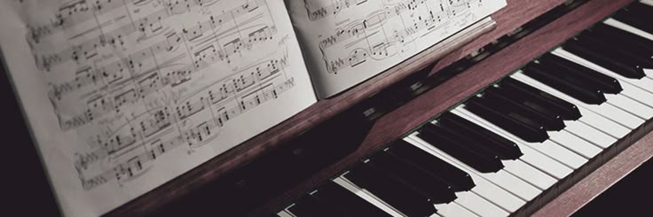
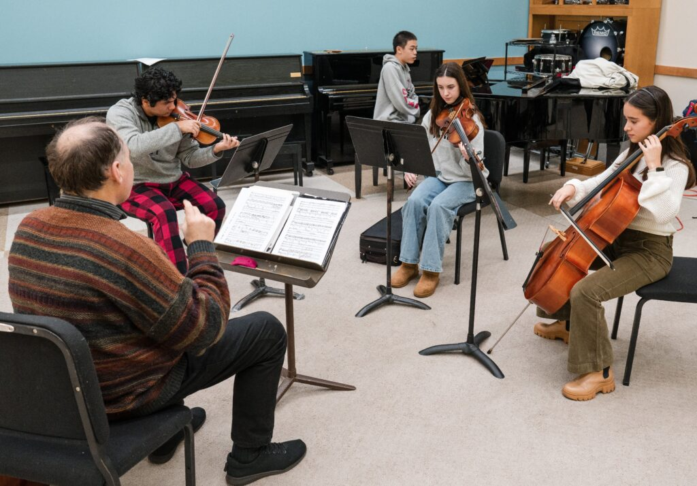
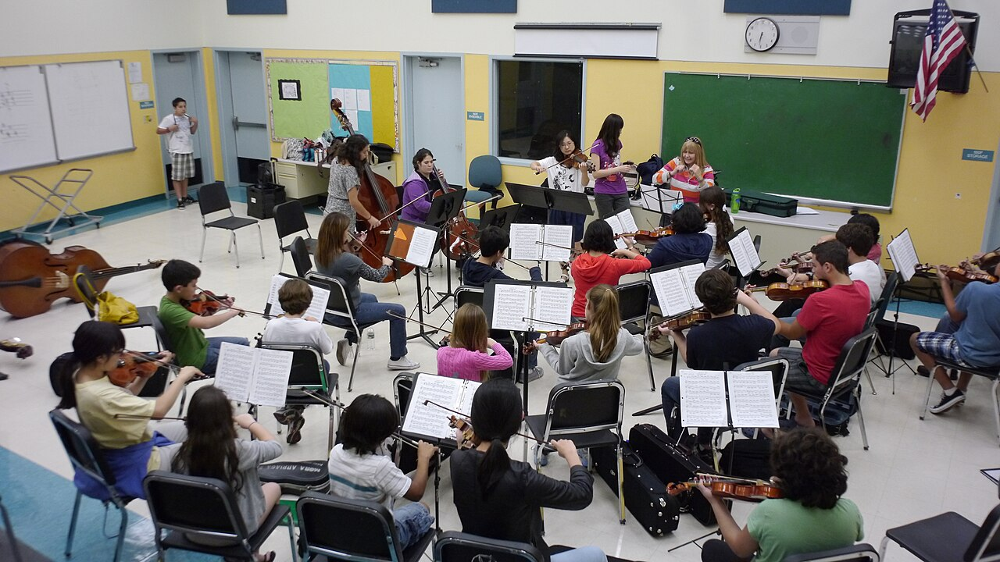

Educação musical
O que é
Educação musical é o campo de estudos que se refere ao ensino e aprendizado da música. A educação musical, assim como a educação geral e plena do indivíduo, acontece assistematicamente na sociedade por meio principalmente da indústria cultural e do folclore, e sistematicamente na escola ou em outras instituições de ensino. Com o ensino de música é possível trabalhar na formação de um indivíduo e outros conteúdos tais como matemática e etc., conforme Binow (2010) elucida que o ensino de música influencia em diversas partes do cérebro. A música desenvolve a cognição e auxilia no desempenho das pessoas que se envolvem com essas habilidades.

Origem
A educação musical originou-se na antiguidade como parte da formação integral (Grécia) e, no Brasil, começou com os jesuítas no século XVI para catequização. Evoluiu de práticas orais e religiosas para o ensino formal e institucionalizado (conservatórios, escolas), com destaque para o Canto Orfeônico de Villa-Lobos e a obrigatoriedade na educação básica.
Benefícios
O ensino musical proporciona benefícios abrangentes, impulsionando o desenvolvimento cognitivo, motor, socioafetivo e linguístico. Ele melhora a memória, foco, concentração e coordenação motora fina, além de estimular a criatividade, reduzir estresse e aumentar a autoconfiança. A música facilita conexões neurais e auxilia na socialização.
Galeria

